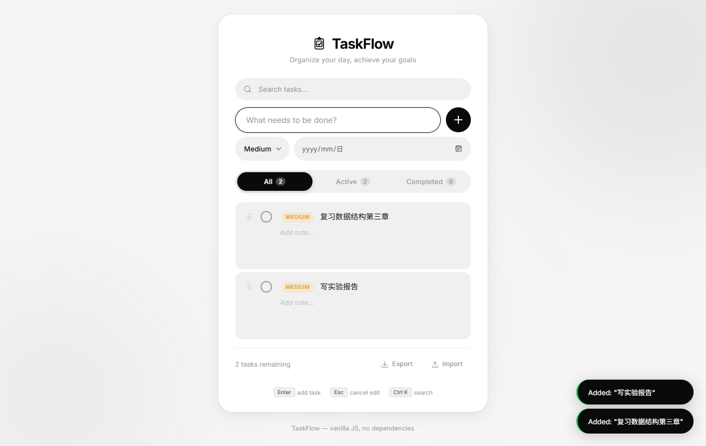
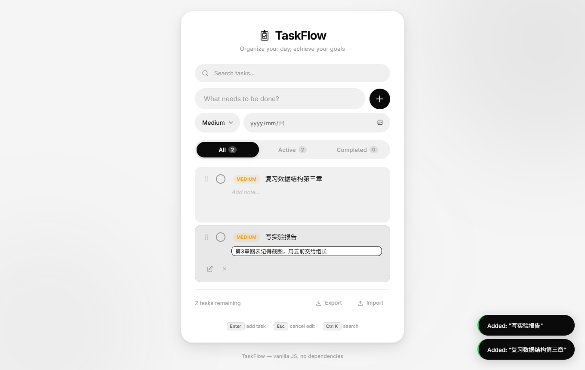
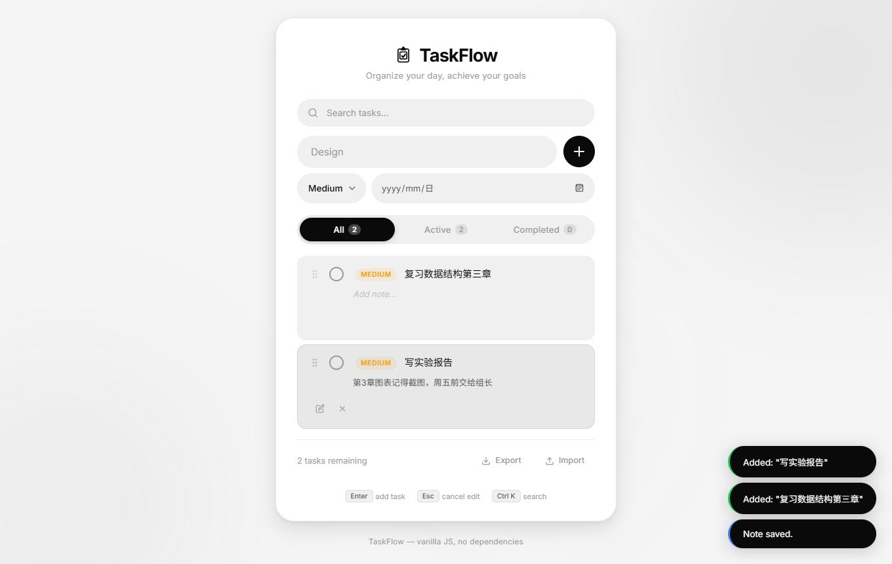
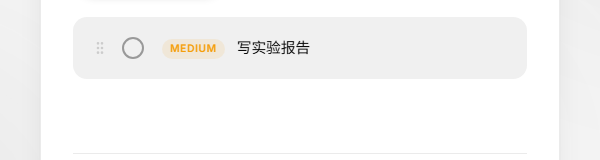
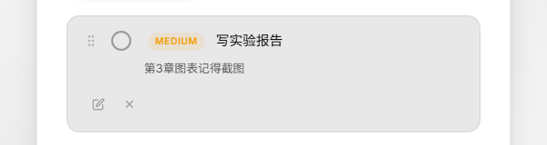

第六章：第一次二次开发——给任务加"备注"功能#
本章约 2~3 小时，是全课程最重要的动手章节。你将完成一次真实的小型二次开发：需求 → 方案 → 局部修改 → 验证。本章给出每一步的完整可复制代码和精确位置，照着做就能做出来——做完后再和「下载中心」里的参考实现（taskflow-notes-edition.zip）对照。
学习目标#
- 会描述一个需求："要什么 + 不要什么"；
- 会和 AI 讨论改动方案，再动手而不是直接要代码；
- 完成一次跨数据层 / UI 层 / 样式层 / 测试层的完整小改动；
- 理解"旧数据兼容"和"输入转义"这两个工程细节；
- 有 diff 可对照，能说清每一处改动为什么存在。
开始前需要#
- 已读懂第四章的数据流；
- 已按 5.2 场景四的方法演练过"先要方案再要代码"；
- 从「下载中心」
taskflow-original.zip解压出的TaskFlow-40dcd30/复制一份干净副本，改名TaskFlow-我的备注版——本章所有修改都对自己的副本做； - 本地服务器跑着自己的副本，随改随看效果。
6.1 先定需求：我们要做什么？#
原版 README 的 "Potential improvements" 第一项就是 Task notes——作者自己点名的改进方向，确认原版没有实现（可以先在源码里搜 note 验证：搜不到）。
需求定义（自己先写一遍再动手）：
每条任务可以附带一段备注文字（比如任务的相关链接、思路、截止时间详情）。备注要：
- 能在任务下方查看；
- 点击可以编辑，Enter 保存、Escape 取消；
- 留空则删除备注；
- 搜索关键词时也要能搜到备注内容；
- 刷新后还在（存进 localStorage）；
- 导出的 JSON 里也要有；
- 备注里输入 HTML/脚本不能被执行（安全）。
先想清楚边界：不改任务正文的编辑逻辑、不加多行备注（保持单行、最长 200 字符，够用且不引入复杂度）。
6.2 先问 AI 要方案，不要先要代码#
按第五章的方法，把需求 + 关键代码（createTask、任务对象结构）贴给 AI，问："要动哪几个文件、哪几个函数、有什么坑"。
一份合理的方案应该长这样（这也是本教程实际采用的）：
| 层 | 文件 | 改什么 |
|---|---|---|
| 数据层 | taskUtils.js |
createTask 返回对象加 note 字段；filterTasks 搜索时一并匹配备注 |
| 逻辑层 | script.js |
加备注编辑状态变量 + 三个函数（开始编辑/保存/取消）；渲染备注行；导入旧数据时补默认字段 |
| 样式层 | style.css |
备注行样式（提示态/输入态/已有备注） |
| 测试层 | script.test.js |
加针对新逻辑的单元测试 |
| 不用动 | index.html |
任务行是 JS 动态渲染的，HTML 模板不用改 |
AI 可能漏掉的坑（要自己想到）：
- 旧数据兼容：老版本存的任务没有
note字段，task.note会是undefined——导入/读取时要给默认值； - XSS 安全：备注是用户输入，必须像任务文字一样用
escapeHtml转义，否则输入<script>会出事； - 键盘冲突：Escape 键原本全局绑定了"清空搜索"——在备注输入框里按 Escape 应该是"取消编辑备注"而不是误伤搜索。
6.3 动手：九个小步，每步都可验证#
标记说明：【找】=在文件里搜什么定位，【位置】=代码加在哪，【验证】=这步完成后怎么检查。
第 1 步：给任务对象加 note 字段（taskUtils.js）#
【找】打开 taskUtils.js，搜 createdAt，找到 createTask 函数的 return 对象（约第 10~22 行）。
【位置】在 dueDate, 那一行之后、createdAt 之前加一行 note: '',：
// 修改后（只多了一行 note: '',）
export function createTask(text, priority = 'medium', dueDate = null) {
return {
id: generateId(),
text: text.trim(),
completed: false,
priority,
dueDate,
note: '',
createdAt: new Date().toISOString(),
};
}
为什么默认 '' 而不是 null？保证"一定有值"，后面所有用到 .note 的地方不用反复判断 undefined——这就是防御性写法。
【验证】浏览器按 F12 → Console 输入 import('./taskUtils.js').then(m=>console.log(m.createTask('测试')))——新对象里应出现 note: ''。（或直接做第 2 步后整体刷新看效果。）
第 2 步：让搜索能搜到备注（taskUtils.js）#
【找】同一文件搜 includes(q)，在 filterTasks 函数里（约第 33~35 行）。
【位置】把那一行换成下面两行：
// 修改前
filtered = filtered.filter((t) => t.text.toLowerCase().includes(q));
// 修改后
filtered = filtered.filter(
(t) => t.text.toLowerCase().includes(q) || (t.note || '').toLowerCase().includes(q)
);
(t.note || '')：旧数据没有 note 字段时回退成空字符串——6.2 说的"旧数据兼容"落点之一。
【验证】保存文件、刷新页面，随便输一个已存在的任务文字搜索——筛选仍然正常（说明没改坏）。备注搜索等 UI 做好后再验。
第 3 步：加"正在编辑哪条备注"的状态（script.js）#
【找】script.js 搜 let editingTaskId（约第 27 行）。
【位置】紧挨着它下面加一行：
let editingTaskId = null;
let editingNoteTaskId = null; // 正在编辑哪条任务的备注（新增）
为什么需要它？同一时间只能编辑一条备注，这个变量就是"正在编辑"的标记，用来决定渲染输入框还是预览文字。
第 4 步：加三个备注函数（script.js）#
【找】搜 function cancelEditTask，找到它的结束大括号 }（约第 163~166 行），紧跟着是 function clearCompleted。
【位置】在 cancelEditTask 的 } 和 function clearCompleted 之间，完整插入下面三个函数（照抄现有"任务文字编辑"三件套的模式，只是把操作对象换成 note）：
function startEditNote(id) {
editingNoteTaskId = id;
renderTasks();
const noteInput = document.querySelector('.task-note-input');
if (noteInput) {
noteInput.focus();
noteInput.select();
}
}
function saveNoteTask(id, newNote) {
if (editingNoteTaskId !== id) return;
const task = tasks.find((t) => t.id === id);
const trimmedNote = newNote.trim();
if (task && (task.note || '') !== trimmedNote) {
task.note = trimmedNote;
saveTasks();
showToast(trimmedNote ? 'Note saved.' : 'Note removed.', 'info');
}
editingNoteTaskId = null;
renderTasks();
}
function cancelEditNote() {
editingNoteTaskId = null;
renderTasks();
}
三个函数分别对应"进入编辑 / 保存 / 取消"——和 startEditTask/saveEditTask/cancelEditTask 结构一一对应。照抄现有模式是最稳的改法：风格一致、行为一致、少踩坑。
第 5 步：渲染备注行（script.js · createTaskElement）#
【找】搜 buildDueDateHtml(task)，在 createTaskElement 函数里（约第 380~385 行），能看到这样的片段：
${buildDueDateHtml(task)}
</span>
<div class="task-actions">
【位置】在 </span> 之后、<div class="task-actions"> 之前，插入这一整块（直接复制）：
<div class="task-note${task.note ? ' has-note' : ''}">
${
editingNoteTaskId === task.id
? `<input
type="text"
class="task-note-input"
value="${escapeAttr(task.note || '')}"
placeholder="Type a note, Enter to save"
maxlength="200"
aria-label="Task note"
>`
: `<button type="button" class="task-note-preview" title="Click to add or edit a note">${task.note ? escapeHtml(task.note) : '<span class="note-hint">Add note…</span>'}</button>`
}
</div>
读法：如果"正在编辑的备注"是这条任务 → 显示一个输入框（value 预填已有备注，escapeAttr 转义防引号截断）；否则显示一个可点击的预览按钮——有备注显示备注（escapeHtml 转义防 XSS），没备注显示灰色 "Add note…" 提示。
【验证】刷新页面：每条任务文字下方应该出现一行灰色的 "Add note…"。出现 → 渲染接对了；没出现 → F12 看 Console 报错，多半是模板字符串括号没对齐。
第 6 步：给备注绑事件（script.js · createTaskElement 尾部）#
【找】搜 .delete-btn').addEventListener，找到这行（约第 406 行）：
li.querySelector('.delete-btn').addEventListener('click', () => deleteTask(task.id));
【位置】在这行之后（createTaskElement 函数里那个 else 分支内），追加：
const notePreview = li.querySelector('.task-note-preview');
if (notePreview) {
notePreview.addEventListener('click', () => startEditNote(task.id));
}
const noteInput = li.querySelector('.task-note-input');
if (noteInput) {
noteInput.addEventListener('keydown', (e) => {
if (e.key === 'Enter') {
e.preventDefault();
saveNoteTask(task.id, noteInput.value);
} else if (e.key === 'Escape') {
e.preventDefault();
cancelEditNote();
}
});
noteInput.addEventListener('blur', () => saveNoteTask(task.id, noteInput.value));
}
三个入口都能保存/取消：点预览进入编辑、Enter 保存、Escape 取消、输入框失焦（点别的地方）也自动保存（blur 事件兜底）。
【验证】刷新 → 点 "Add note…" → 出现输入框 → 打字 → Enter → 变回文字显示 + 右下角 toast "Note saved."。走到这里功能就通了，剩下是兼容性和样式。
第 7 步：两处"补默认值"——旧数据兼容落地（script.js）#
【找】搜 dueDate: null, ...t —— 有两处（loadTasks 里约第 226 行；importTasksFromJSON 里约第 556 行），长这样：
tasks = JSON.parse(stored).map((t) => ({ dueDate: null, ...t }));
【位置】两处都做同样的小改动：dueDate: null 后面加 note: '',：
tasks = JSON.parse(stored).map((t) => ({ dueDate: null, note: '', ...t }));
含义：展开旧任务数据时先铺上 {note:''} 默认值，旧数据里没有 note 就用默认的 ''，有就保留原值。这一行救了所有老用户的旧数据。（两处都要改，漏一处导入旧备份时备注会丢。）
第 8 步：Escape 键的冲突处理（script.js）#
【找】搜 clearSearch() 附近的 else if (searchQuery)（init() 里的全局键盘监听，约第 618 行）：
} else if (searchQuery) {
clearSearch();
}
【位置】给条件加一个 && !editingNoteTaskId：
} else if (searchQuery && !editingNoteTaskId) {
clearSearch();
}
含义：正在编辑备注时按 Escape，不该顺手把搜索也清了。不改这行会引入一个隐蔽交互 bug（第 6 步里备注输入框的 Escape 会同时触发全局清空）。
第 9 步：样式（style.css）#
9a：【找】搜 .task-item {（约第 503 行），在 display: flex; 下面加一行 flex-wrap: wrap;：
.task-item {
display: flex;
flex-wrap: wrap; /* 新增：允许备注折到下一行 */
align-items: center;
gap: 14px;
padding: 14px 18px;
不加这行，备注会被挤在同一行里布局错乱——flex-wrap 让"占满整行"的 .task-note 能折下去。
9b：【位置】拉到 style.css 文件最末尾，追加整段（直接复制）：
/* ---------- Task Note (tutorial feature) ---------- */
/* 每个任务下方的一行备注：平时只读显示，点击进入编辑 */
.task-note {
flex-basis: 100%;
margin: -6px 0 0 66px;
min-width: 0;
}
.task-note-preview {
display: block;
width: 100%;
padding: 0;
border: none;
background: none;
font: inherit;
font-size: 0.8rem;
line-height: 1.5;
color: var(--text-secondary);
text-align: left;
cursor: text;
white-space: nowrap;
overflow: hidden;
text-overflow: ellipsis;
}
.note-hint {
color: var(--text-muted);
font-style: italic;
opacity: 0.55;
transition: opacity var(--transition-fast);
}
.task-item:hover .note-hint {
opacity: 0.9;
}
.task-note-input {
width: 100%;
padding: 3px 8px;
font: inherit;
font-size: 0.8rem;
color: var(--text-primary);
background: var(--bg-secondary);
border: 1px solid var(--accent-primary);
border-radius: var(--radius-sm);
outline: none;
}
.task-item.completed .task-note-preview {
text-decoration: line-through;
color: var(--text-muted);
}
margin-left: 66px 是为了对齐任务文字（左边让过拖拽手柄 + 勾选框的宽度）——细节对齐很重要，不然备注会突兀地顶到最左边。
【验证】刷新：每条任务下的 "Add note…" 应该缩进对齐任务文字、灰色小字；有备注时显示正常字色；已完成任务的备注带删除线。
第 10 步（可选）：加单元测试（script.test.js）#
装了 Node 的同学：拉到 script.test.js 文件末尾，追加：
it('createTask includes a note field defaulting to empty string', () => {
expect(createTask('x').note).toBe('');
});
it('filterTasks matches note content too', () => {
const tasks = [createTask('task a'), createTask('task b')];
tasks[0].note = 'remember milk';
expect(filterTasks(tasks, 'all', 'milk')).toHaveLength(1);
});
跑 npm install && npm test——33 个老测试 + 2 个新测试应全过。这就是回归测试的根基：新测试过了、老的也全过，才叫"没改坏"。
6.4 每步出错怎么问 AI#
改代码的过程中如果某一步不 work，按这个模板问（别只说"不行"）：
我在给任务管理器加备注功能，刚做完第 X 步（描述做了什么）。
现象：（看到的具体情况/截图描述）
Console 报错原文：（如果有红字，完整复制）
我检查过：（你验证过什么）
请帮我定位问题，不要让我重做大改。
每个错误都是正常的——第九章前的学习成本里，语法对不齐、括号漏一个都是日常。卡 15 分钟先自己对照本章代码逐行查，再问 AI。
6.5 改完了？diff 一下，留证据#
你的副本和原版对比，git diff 一拉就知道动了多少（没有 git 的话，用 VS Code 的"比较文件"功能一个一个对，或直接看「下载中心」的 changes.diff——网页版在左侧「改动对照」）：
git diff --no-index TaskFlow-40dcd30 TaskFlow-我的备注版 > my-changes.diff
参考结果：4 个文件被改、约 +137/-10 行、index.html 一字未动。如果你的 diff 大得离谱，多半粘了 AI 的整文件输出——回 6.3 按步骤小改。
和参考版对照：到「下载中心」下载 taskflow-notes-edition.zip，解压出 TaskFlow-任务备注版/，比一比你的实现。不需要逐字相同——功能正确、分层合理、关键防御（note:'' 兜底、转义）都在，就是对的。
6.6 验证：眼见为实#
逐项验收 6.1 的需求：
| 需求 | 怎么验 | 结果 |
|---|---|---|
| 查看备注 | 任务下方出现 "Add note…" 提示 | ✅ |
| 点击进入编辑 | 变输入框、预填旧备注 | ✅ |
| Enter 保存 / Escape 取消 | 分别试 | ✅ |
| 留空删除备注 | 输入后清空再保存 → 回到 "Add note…" | ✅ |
| 搜索能搜备注 | 搜备注里的词 → 任务被筛出 | ✅ |
| 刷新还在 | F5 → 备注还在 | ✅ |
| 导出 JSON 有备注 | 点 Export → 打开文件看 "note" 字段 |
✅ |
| XSS 安全 | 备注输入 <script>alert(1)</script> → 显示为文字，不弹窗 |
✅ |
三态截图（本教程的真实截图）：
  
修改前后对比（看任务下方多出的一行小字）：
 
常见失败及处理#
| 现象 | 处理 |
|---|---|
| 改了代码页面没变化 | 浏览器缓存：Ctrl+F5 强制刷新；或确认改的是正在被访问的那份文件 |
| "Add note…" 没出现 | 第 5 步插入位置错了（必须在 </span> 后 .task-actions 前）；Console 看 JS 报错 |
| 点备注没反应 | 第 6 步事件没绑上，或绑在 if (notePreview) 外；Console 报错定位 |
| 备注存了刷新就没了 | saveTasks() 忘了调——检查 saveNoteTask 里有没有这行 |
输入 < 直接当 HTML 渲染了 |
escapeHtml 漏用——所有用户输入进页面必须转义 |
| 按 Escape 把搜索清了 | 第 8 步忘了加 !editingNoteTaskId 条件 |
| 旧任务一加载就报错 | 旧数据没 note 字段——检查第 7 步两处 note: '' 默认值 |
- 能说出这个功能动了哪 4 个文件、哪个文件没动；
- 能解释为什么
createTask默认note: ''而不是null； - 能解释
escapeHtml/escapeAttr分别在哪用、为什么都必须用； - 能指出"旧数据兼容"在代码里的两个落点（第 7 步两处）；
- 能说出为什么不重写
index.html； - 自己的 diff 里每一处都讲得出为什么。
- 不看书能复述"为什么搜索、存储、导入、UI 都要改"（备注是一个贯穿数据全链路的字段）；
- 6.6 验收表全部手测通过；
- 第七章的测试全过。
上一章：第五章 ｜ 下一章：第七章：学会验证 AI 生成的代码